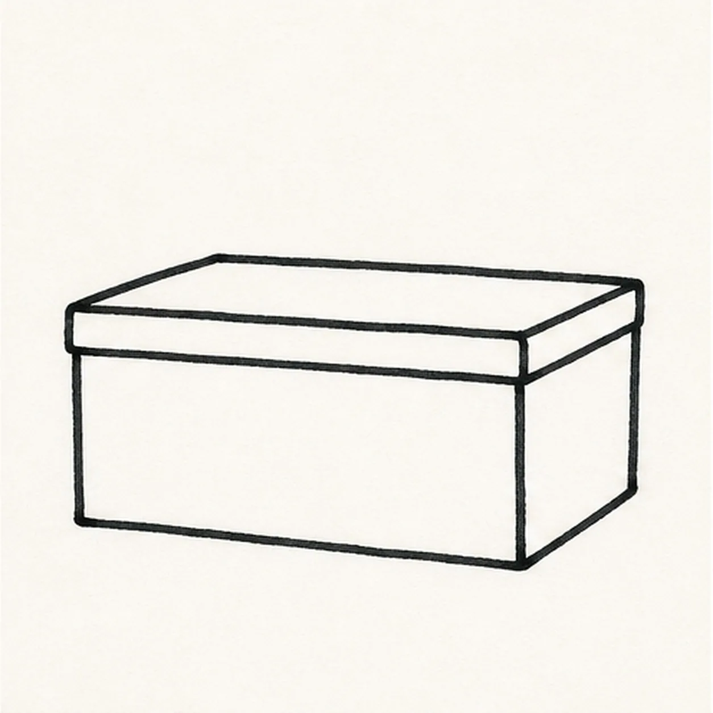
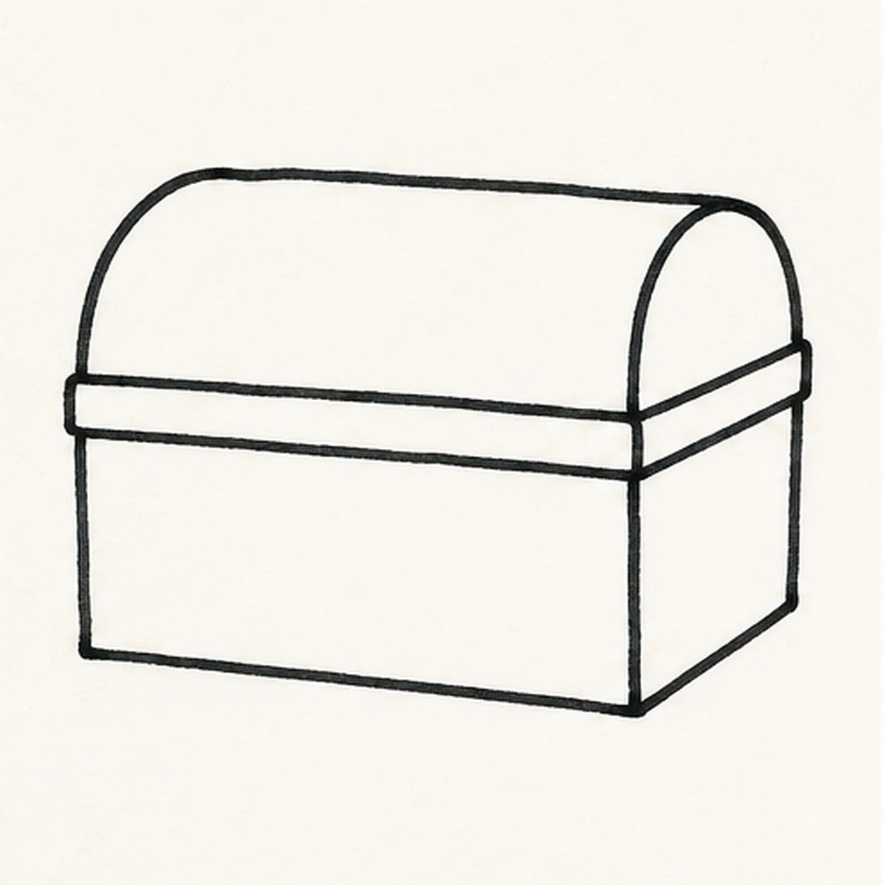
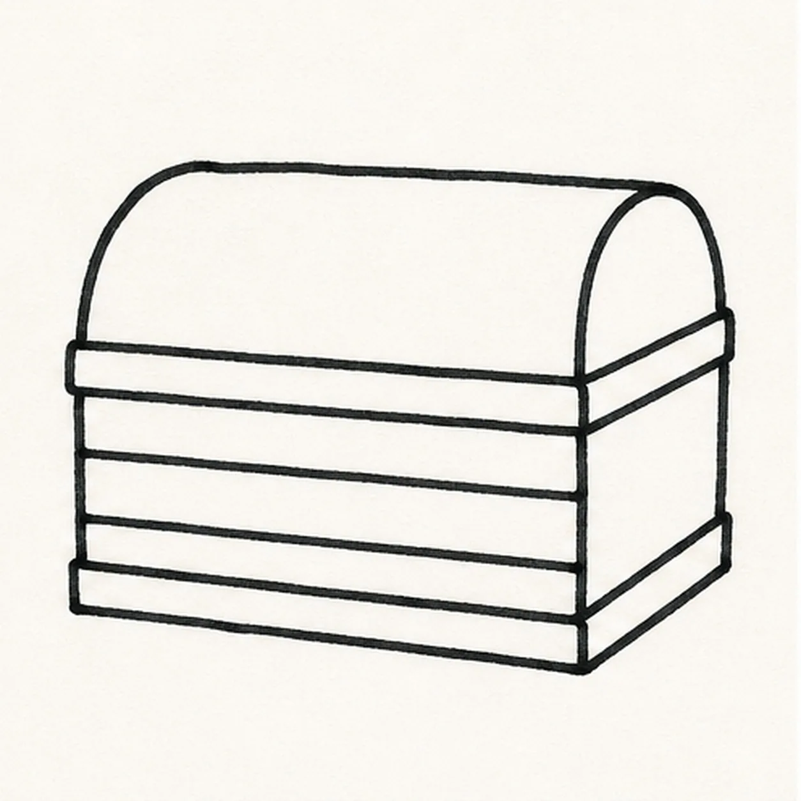
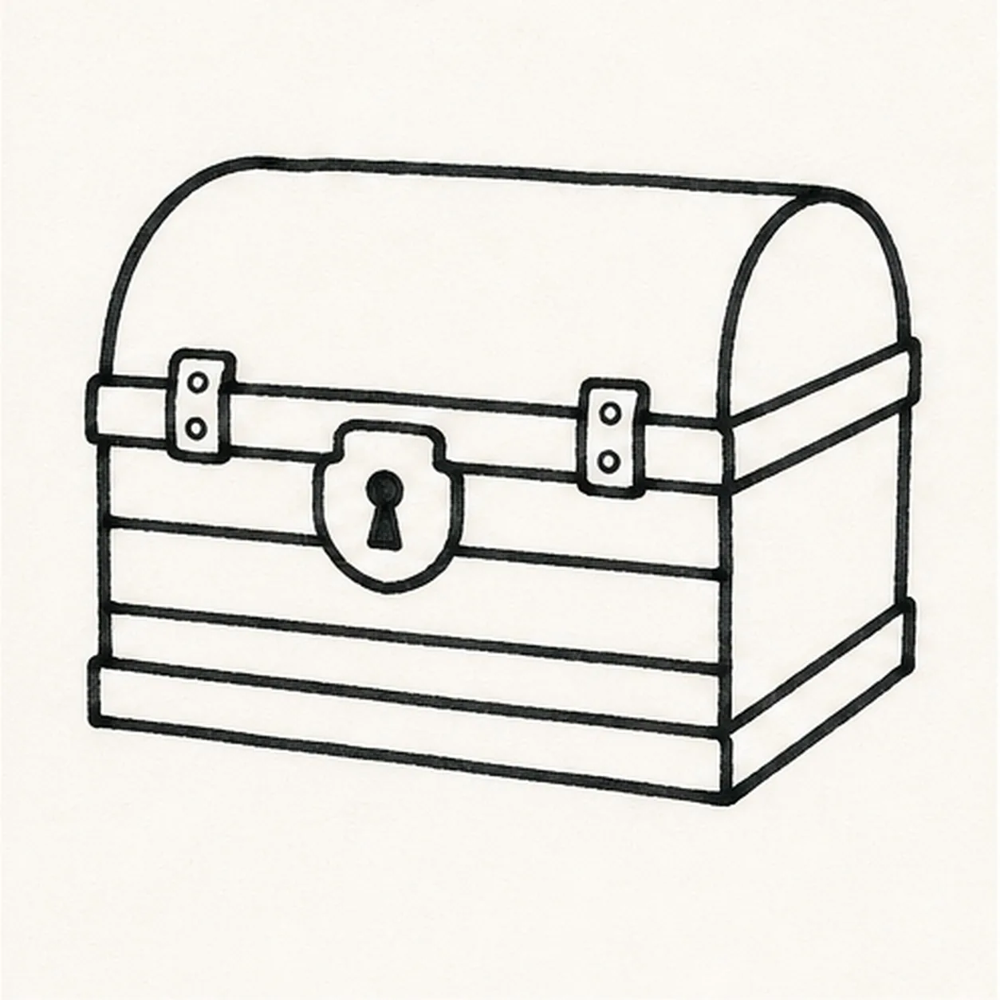
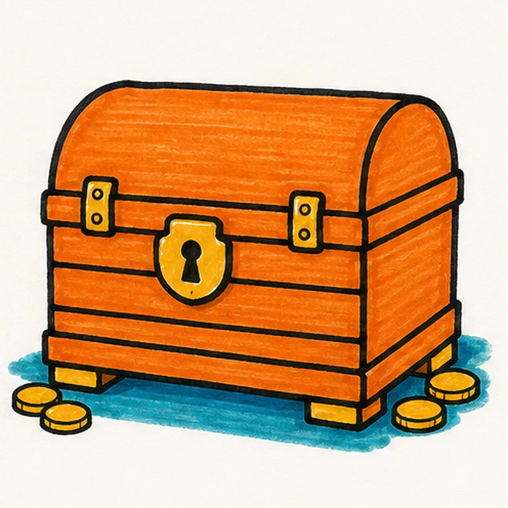

Felt-tip marker mode
Let's draw a cartoon treasure chest
Treat this as one playful practice round: sketch the idea loosely, simplify the shapes, then commit with confident marker outlines and bright fills.
-
01

Block the chest base
Use a light construction pass to draw one low rectangular chest box with a wider front plane.
Doodle tip: Ghost the two long front edges before touching the marker down. Let both edges lean in the same direction so the chest does not twist.
-
02

Round the lid
Add a domed lid directly on top of the established box, keeping the curved end aligned with the right side plane.
Doodle tip: Pull the dome in one smooth arc after a rehearsal stroke. A slightly uneven arc feels hand-drawn, but it should still land on both lid edges.
-
03

Divide the wood
Draw three loose front plank bands and a narrow lower rim across the existing chest base.
Doodle tip: Leave the bands a little imperfect and roughly parallel. The gaps between them matter more than perfectly ruler-straight lines.
-
04

Set the hardware
Add a central lock plate and two small hinges right on the lid seam you already drew.
Doodle tip: Keep the lock chunky and simple. One clear keyhole reads better than tiny mechanical marks.
-
05

Add feet and color base
Draw two squat feet and a few coin circles beside the existing base, then fill the established chest orange, the hardware and coins gold, and the ground shadow teal-blue.
Doodle tip: Fill from each black edge inward and let the marker streaks follow the chest planes. Directional streaks make the big orange surfaces feel lively.
-
06

Make the chest gleam
Reinforce the existing black outlines, tidy the orange, gold, and blue fills, and add tiny highlights to the already drawn lock and coins.
Doodle tip: Stop before adding a face, a pirate, words, or a border. The domed lid, lock, and scattered coins already give the chest plenty of comic energy.